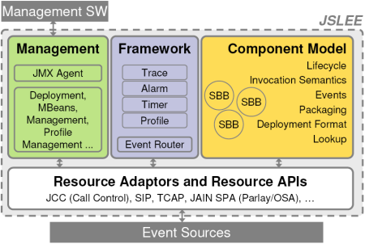
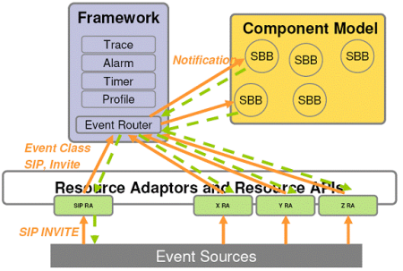
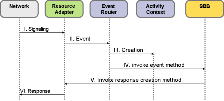

by Ivelin Ivanov, M. Ranganathan, Michael Maretzke
11/08/2005
VOIP, as many have said, is more than merely voice over IP. Recent years have seen several highly popular applications like skype, Google talk and MSN messenger. All of them combine voice, instant message (IM) and other modes of communication into unified clients and greatly enhance the user experience. Previously these means to communicate were islands - largely isolated from each other. However, engineers visited them and found large areas of community between these different modes of communication, resulting in integrated clients that have changed the way in which we communicate and conduct business.
What kind of server support needs to be provided for these applications? An examination of the structure of such applications indicates that there are two parts to the application: the signaling part and the media part. The signaling part is an event oriented activity. Network endpoints exchange one way messages through various servers and signal the establishment of a session. Interesting services can be built by placing fragments of code or "Event Handlers" in the signaling path at the server. Furthermore, service providers may speed up their innovation processes and quickly launch new services if using standards-based component model and container architecture. And this is what JAIN SLEE (JSLEE) is all about - it is an event oriented application middleware standard and Mobicents is an implementation of it. So far the higher level, now the details.
The primary goal of Mobicents is to produce a quality open source implementation of the JSLEE standard that integrates seamlessly with enterprise and web applications. The founding team believes that the existence of such a platform will unleash an inevitable surge of R&D and creativity. The same developers who write web applications should be able to write VOIP services using familiar tools and familiar execution environments, leveraging on their existing expertise. The Mobicents projects has already demonstrated successfully that J2EE archives and JSLEE archives can be deployed and run smoothly along side in the same Virtual Machine. Mobicents developers can use Eclipse, Netbeans or any other favorite Java IDE to write and deploy SLEE applications, just as they would with J2EE.
First some preliminaries: JAIN SLEE or JSLEE. JAIN is a SUN invented acronym for Java APIs for Intelligent Networks. JAIN aims for an enabling set of Java APIs to develop and deploy service driven network applications. JAIN is an industry framework designed and specified by groups of industry partners and experts. SLEE is an acronym for Service Logic Execution Environment. So, what's a JSLEE? JSLEE is an application execution framework analogous to the J2EE environment. However, JSLEE's design principles explicitly aimed for a low latency (<100ms) and high throughput (1000's of events per second) environment optimized for asynchronous event processing including transaction handling, high reliability, a distributed component model and a standardized framework. JSLEE's standardization finished in March 2004 (JSR-22) with JAIN SLEE version 1.0 and continues in JSR-240 aiming at JAIN SLEE version 1.1. Initially, JSLEE was designed for network signaling environments. However, the whole architecture proved to be generic enough to allow for other application areas as well.
Just another execution environment? Why? There are both architectural and performance reasons for inventing it. JSLEE inherits some concepts from J2EE, yet does not replace or contradict the J2EE environment. JSLEE is a complementary platform addressing very specific and special requirements not covered by J2EE as of today. Communications applications have unique requirements for performance and availability that are not addressed in J2EE. However, the integration between both platforms is explicitly foreseen by the standards. The invention of JSLEE was motivated by the telecommunication's industries trend towards component based architectures realized in open, standardized off-the-shelf platforms. JSLEE is standardized and hence helps reducing time-to-market and development costs. Furthermore, JSLEE allows multi-vendor environments - even in the service layers of telecommunication providers. Being Java based, the paradigm of "Write once - Run anywhere" is supported and allows portable standards compliant applications. Besides, JSLEE introduces network abstraction by the means of Resource Adaptors. JSLEE is a solid foundation with a robust component model and scalability characteristics designed for high-volume, low latency signaling. It is published as an open standard via the Java Community Process.
Looking under the hood, JSLEE consists of four main areas: Management, Framework, Resource Adaptors and the Component Model.

Figure 1. Overview of JAIN SLEE's standardized architecture
The Management entities allow the whole JSLEE environment to be managed through JMX-MBeans. The various entities in the Framework support the business logic implemented in distributed components (so called Service Building Blocks or SBB). The Trace entity allows a centralized and single point for logging, Alarms inform external management systems, Timers invoke components in pre-defined intervals and Profiles provide the business logic with information and data during execution. Amongst them, the Event Router routes incoming and newly created events to previously registered SBBs and resources. The Event Router is more or less the heart of JSLEE's event routing system.
Resource Adaptors bridge the component model and the underlying event infrastructure. The event source could be everything emitting events implemented in whatever language and environment. The Resource Adaptor converts incoming protocols and network specific event into generic, semantically equivalent Java events and fires them into the JSLEE application server for further processing. So, the application and the source of events are logically decoupled - applications execute on any network.

Figure 2. Event processing through Resource Adaptors and the Event
Router
The Component Model defines how components interact with each other, with the environment, the bundling of services and their deployment. The JSLEE environment invokes SBBs according to a standardized lifecycle model for SBBs - comparable to EJBs lifecycle. The runtime environment secures and manages event processing and framework invocation with transactions. Doing so, the JSLEE application server remains in a defined and consistent state even in case of failure.
A Service is essentially a management artifact in JSLEE and bundled as a jar file. A JSLEE Container may simultaneously house several services. Each Service is a logical grouping of functionality and consists of several SBBs. Amongst them, there is a distinguished SBB called the root SBB that is automatically instantiated by the JSLEE container. If appropriate, this root SBB instantiates child SBBs and routes events to these child.
Incoming events emitted by external sources reach the JSLEE application server through Resource Adaptors, which in turn fire Java events towards the Event Router. The Event Router routes them to SBBs following predefined prioritizations. Related events are clustered as Activities. Events of one Activity share a common state - the Activity Context. An example for an Activity is a phone call with the sequenced events CALL_SETUP, CALL_ESTABLISHED and CALL_TERMINATED.
The following figure shows the simplified process of event processing. A network generated signal to setup a telephone call is handed over to the Resource Adaptor. The Resource Adaptor generates a Java Event and hands it over to the Event Router. Being the first event in a sequence to setup a call, the Event Router generates a new Activity Context. This context and the event itself are handed over to the event processing logic in the SBB. After processing the logic, the SBB invokes the Resource Adaptor and makes it to produce an answer for the network.

Figure 3. An example of event processing in JSLEE
The JSLEE follows a typed event model - each Resource Adaptor (RA) is thought of as an event source that produces a stream of typed events and each SBB is an event sink which consumes the stream of typed events. An event XXX is consumed by the container invoking a user-written onXXX() method with the appropriate signature on the SBB. SBBs may also fire events on activity contexts. In concrete terms, a resource adaptor is a wrapper around a protocol stack (e.g. the SIP stack). Its job is to react to incoming messages on the wire, and generate a typed stream of events which it feeds to the event router. The event router in turn, starts appropriate transactions, possibly creating root SBBs of service instances and routing events to such SBBs. Now let us drill down into some of these details.
First let's examine how the JSLEE instantiates services. (1) An event (for example an incoming SIP Message) arrives on an activity and is fielded by the container via a resource adaptor. (2) The JSLEE container creates an Activity Context for the Activity if needed. (3) The container searches through the installed services to discover if there is one or more services which are interested in the incoming event. How does this work? Each active installed service advertises a "convergence name" which is consulted for a match. If a match is found, the container automatically creates the root SBB of the service (if not already instantiated), attaches the root SBB to the activity context and routes the event to the root SBB via the activity context.
The JSLEE execution model defines transactional boundaries for so called "SLEE originated invocation sequences". As in EJB terminology, a transaction is an atomic resilient unit of work. However, unlike in EJB, transaction boundaries are not directly visible. Transactions are started by the system at the beginning of JSLEE originated sequences and committed at the end of such sequences. Application errors and exception conditions result in the rollback of the enclosing transaction. Concurrently executing SBBs have a serializable view of the world and are isolated from each other. That is the final outcome of concurrent execution is some serial ordering of the execution sequences. The JSLEE does not mandate a specific implementation of the concurrency model. For Mobicents, we have chosen to implement pessimistic concurrency control. In the implementation, we use a thread pool and assign an executor per activity context. This is a reasonable choice because an activity context is an event bus and events on that bus should be consumed in FIFO order.
The JSLEE derives some of its efficiency by relaxing disk persistence requirements. Very few data structures need to survive a full JSLEE restart. Most sensitive structures can simply be replicated across the cluster rather than persisted to disk. We use JBoss Cache technology to achieve this. JBoss Cache is tightly coupled with JBoss Transaction Manager and provides in-memory replication services across the cluster. Structures in the implementation that need to be replicated by placing them in the cache include Activity Contexts, SBB entities and Service instances. However, we do not, in general, need to replicate the event queue. The final point is a subtle one that works under the assumption that the endpoint will retransmit the message. This gives the SLEE a significant performance advantage over JMS. Indeed, for most applications, there is little traffic across the cluster after the initial activity has been setup and the service instantiated.
The use of the JBoss modular J2EE architecture results in a nice and cleanly separable architecture for the implementation. Each management (JMX) interface mandated by the SLEE is installed as logically separate JBoss service. The JBoss microkernel architecture allows Mobicents to work with a minimal set of installed JBoss services, thus making for a nicely integrated, extensible and modular architecture.
Mobicents will continue to closely track the JSLEE standard and remain compliant with its latest official releases. The project will also expand its suite of Resource Adaptors and standard SLEE services to further commoditize communications infrastructure thus stimulating innovation in new generation intelligent services. High availability, performance and scalability are other areas standing high on the task priority list.
We believe that before long, J2EE developers will be as comfortable writing to JSLEE as they are with J2EE. Next generation application developers will be fluently crafting triple play applications that best serve their end users.
Mobicents is a community project and it exists by and large due to the voluntary effort of a core team of developers (listed on the mobicents home page).
Mobicents has advanced through incorporating code released by the National Institute of Standards and Technology (NIST) into the public domain. Mobicents includes contributors from academia and top tier telecommunication companies. Notable contributions have been made from University of Genoa, Portugal Telecom Inovacao, Lucent Technologies, Open Cloud, Vodafone, and Aepona.